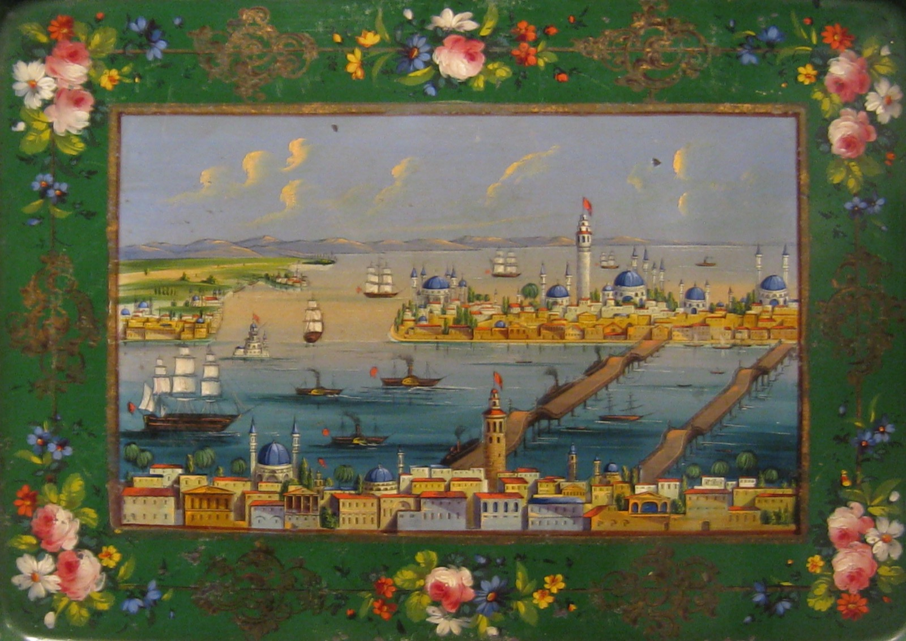
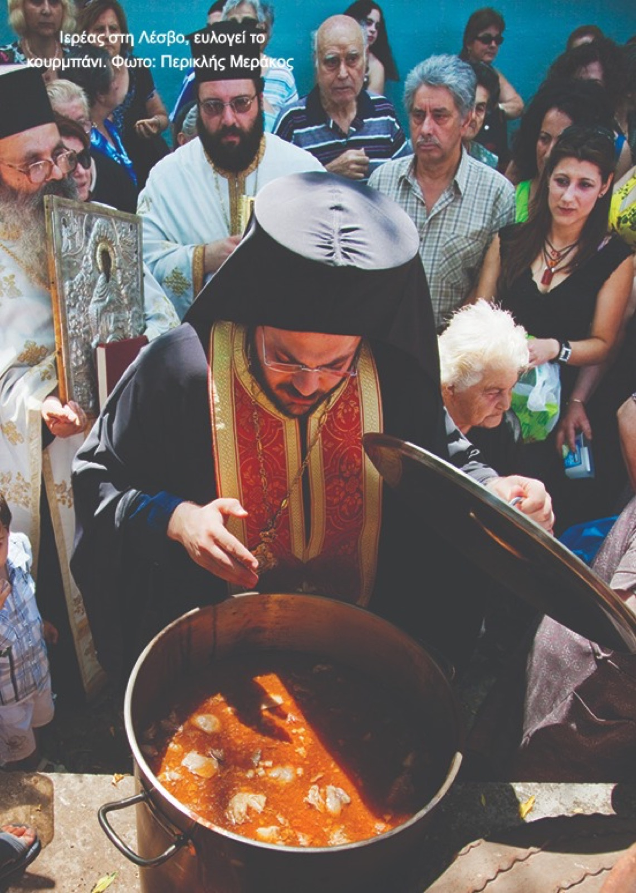

Τούρκικες λέξεις στο τραπέζι μας 3ο μέρος

Καν έως Λ

καπάκι, την έχουμε ενσωματώσει στη γλώσσα μας σε τέτοιο βαθμό, που δύσκολα αναγνωρίζουμε ότι είναι δάνειο. Πώμα, σκέπασμα, κάλυμμα. Κύλησε ο τέντζερης και βρήκε το καπάκι.
καπαμάς, αρχικά σήμαινε μία τεχνική μαγειρέματος, όπου το φαγητό μαγειρευόταν σκεπασμένο, καπακωμένο με το καπάκι της κατσαρόλας. Τώρα πια σημαίνει και το ίδιο το φαγητό, το οποίο είναι κρέας κομμένο σε μικρά κομμάτια, συνοδεία κάποιου ζυμαρικού ή πατάτας και συχνά σάλτσα ντομάτας. Στην Κύπρο ο κλασικός καπαμάς γίνεται με κολοκάσι και κρασί.
καρπούζι, υδροπέπων λεγόταν στα ελληνικά, αλλά τελικά κυριάρχησε απόλυτα η τούρκικη λέξη. Το ζήτημα είναι να μην είναι μάπα το καρπούζι και να μην προσπαθούμε να βάλουμε δύο καρπούζια κάτω από την ίδια μασχάλη. Σημαντικό επίσης, να μην κατέχει ένας και το μαχαίρι και το καρπούζι.
κασέρι, ημίσκληρο κίτρινο τυρί, από πρόβειο ή μείγμα πρόβειου και μάξιμουμ 20% κατσικίσιου γάλακτος. Παλαιώνει για τρεις τουλάχιστον μήνες πριν βγει στην αγορά και είναι το πιο γνωστό και δημοφιλές κίτρινο τυρί στην Ελλάδα. Έχει ελαφρώς μαστιχωτή υφή και κάνει λαμπρή καριέρα ως βασικό συστατικό στα τοστ αλλά και ως σαγανάκι. Το κασέρι είναι από το 1996 ΠΟΠ και έχουν δικαίωμα να το παράγουν μόνο τυροκομεία στη Θεσσαλία, τη Μακεδονία και τους νομούς Ξάνθης και Λέσβου. Το τυρί αυτό, στον Ελλαδικό χώρο, αρχικά έγινε γνωστό με το όνομα κασκαβάλι, λατινική λέξη, που σε μας έφτασε μέσω των Βλάχων. Αυτό το όνομα παρέμεινε στη γειτονιά μας και όλοι οι Βαλκάνιοι το αποκαλούν κασκαβάλ. Τέλος, κασέρι στην αργκό είναι το χρηματικό ποσό, "μάζεψε όλο το κασέρι της αγοράς."
κατιμέρι, (ή κατιμέρκι στην Κύπρο), είναι λεπτά φύλλα ζύμης, τα οποία παραδοσιακά ψήνονταν στο σάτζι, μεταλλικό κυκλικό σκεύος της ανατολής. Σαν συνταγή είναι πολύ κοντά στους γκιουζλεμέδες που φτιάχνουν οι εξ ανατολής πρόσφυγες. Έτοιμα ψημένα, τα κατιμέρια περιχύνονται με μέλι ή πετμέζι, και στην αλμυρή τους εκδοχή, γεμίζονται με τυρί, διπλώνονται και γίνονται ένας είδος τυρόπιτας της στιγμής.
κατιφές, το φυτό καλέντουλα. Είναι γνωστό ως βάση σε καταπραϋντικές αλοιφές. Τα αποξηραμένα φύλλα του γίνονται εξαιρετικό ρόφημα, ενώ τα φρέσκα, ταιριάζουν πολύ σε πράσινες σαλάτες και κάνουν και πολύ εντύπωση.
καφές, καφενείο, καφενές, καφετζής. Η λέξη καφές είναι αραβική, και έφτασε σε μας όπως και ο ίδιος ο καφές εξ ανατολών. Το θέμα είναι ατελείωτο, θα αρκεστώ να πω ότι για τους ανατολίτες μουσουλμάνους, οι οποίοι δεν κατανάλωναν αλκοόλ, ο καφές ήταν το υποκατάστατο του κρασιού. Γι αυτό και υπήρχε η έκφραση "αραβικό κρασί" ή "κρασί του κόκκου". Ελάχιστα για το σύμπαν των καφενείων. Κορυφαία καφετζού η Γεωργία Βασιλειάδου σε ταινία του 1956, σε σενάριο και σκηνοθεσία του Αλέκου Σακελλάριου.
κεμπάπ, ουσιαστικά είναι ο πρόγονος του μπέργκερ. Η λογική του κεμπάπ είναι αλεσμένο κρέας με πολύ λίπος και… τίποτε άλλο. Εκτός από αλάτι. Καλό ζύμωμα και τα αυθεντικά κεμπάπ είναι έτοιμα. Στις γειτονιές της ανατολής, ως κυρίαρχο street food, μπορεί κανείς να προσθέσει μία πληθώρα μπαχαρικών και καρυκευμάτων, αλλά ως επιλογή σερβιρίσματος, όχι κατά την παρασκευή του. Διάσημο το γιαουρτλού κεμπάπ, με γιαούρτι βεβαίως, βεβαίως.
κεσές, μικρό δοχείο, αρχικά πήλινο (σήμερα και πλαστικό), στρογγυλό, σχετικά ρηχό που χρησιμοποιείται για το πήξιμο του γιαουρτιού.
κεσκέκι, κεσκέκ, κισκέκι, κισκέτσι. Πανηγυριώτικο φαγητό με δημητριακά (συνήθως πλιγούρι), όσπρια (συνήθως ρεβύθια αλεσμένα) και κρέας (πουλερικά, μοσχάρι, ή αμνοερίφιο). Δεν είναι λέξη ιδιαίτερα διαδεδομένη, παραμένει όμως σε χρήση στη Μακεδονία και όπου υπάρχουν συμπαγείς πληθυσμοί προσφύγων από τη Μικρά Ασία. Ιδιαιτέρως ζωντανή και ως λέξη και ως έθιμο είναι στη Λέσβο. Σε πολλά πανηγύρια του νησιού, του Αγ. Χαραλάμπους στην Αγ. Παρασκευή, του Αγ. Ιγνατίου στη Μονή Λειμώνος, του Αγ. Ραφαήλ και της Υπαπαντής στην πόλη της Μυτιλήνη, στήνονται καζάνια στον προαύλιο χώρο των εκκλησιών, όπου και μαγειρεύεται το κισκέκ και προσφέρεται στους προσκυνητές. Στην Τουρκία αναφέρεται ως "γεύμα για όλο το χωριό" και ακόμη και σήμερα ετοιμάζεται, μαγειρεύεται και καταναλώνεται από ολόκληρο τον πληθυσμό ενός χωριού.
κιμάς, ναι και ο κιμάς τούρκικη λέξη! Αλεσμένο κρέας, σχεδόν από όλα τα είδη κρέατος. Ο κιμάς για να είναι νόστιμος πρέπει να έχει το λιπάκι του. Μάλιστα στα περίφημα αυθεντικά αμερικάνικα μπέργκερ, το ποσοστό λίπους ξεπερνά το 40%. Αξέχαστη η πινακίδα στα κρεοπωλεία των παιδικών μας χρόνων "ο κιμάς κόπτεται παρουσία του πελάτου."
κιούπι, το μικρό πιθάρι. Κεραμικό δοχείο αποθήκευσης, κυρίως του πολύτιμου λαδιού. Η λέξη κάνει μία δεύτερη λαμπρή καριέρα ως όνομα εστιατορίων. Πόλεις και χωριά, κάποτε και το Κολωνάκι, είχαν τα κιούπια τους.
κουραμπιές, εκτός από βουτυράτο και τραγανό γλύκισμα σημαίνει και τον άβουλο άνθρωπο. Λατρεύουμε τους κουραμπιέδες της Μαριέττας από το Naxion, στη Χώρα της Νάξου. Θα επανέλθω με αναλυτικό post παραμονές χριστουγέννων.
κουρμπάνι, από την αραβική λέξη ḳurbān που σημαίνει θυσία. Σε μας η λέξη έφτασε μέσω Τουρκίας, γι αυτό την καταχωρούμε στις τούρκικες λέξεις. Το κουρμπάνι είναι ένα έθιμο που περιλαμβάνει τη τελετουργική σφαγή ενός ζώου, συνήθως στο προαύλιο ενός ναού, το μαγείρεμά του σε καζάνια, και τέλος το κοινό γεύμα των μελών μιας κοινότητας. Η παράδοση παραμένει ζωντανή σε αρκετά μέρη της Ελλάδας, αν και σημειώνονται ενστάσεις και εντάσεις από ομάδες «οικολόγων». Μυσταγωγικά τα κουρμπάνια που κάνουν οι αναστενάρηδες στο κονάκι τους, πριν πατήσουν τα κάρβουνα.

κουσκούσι ή κουσκούς ή κους κους, είναι καταρχήν ένα ζυμαρικό σε κόκκους. Εξαιρετικά δημοφιλές σε όλα τα μεσογειακά κράτη, με κάποια από αυτά να το έχουν σχεδόν εθνικό φαγητό. Υπάρχουν αρκετές παραλλαγές και στην παρασκευή του και στο μέγεθος του κόκκους του. Το αραβικό κουσκούς είναι πάρα πολύ λεπτό και συχνά δεν χρειάζεται καθόλου βράσιμο, απλά μούλιασμα σε ζεστό νερό. Το κουσκούς που έφεραν οι πρόσφυγες στην Ελλάδα, έχει κόκκο μεγαλύτερου διαμετρήματος και απαιτεί κανονικό βράσιμο. Είναι το λεγόμενο και κουσκούς πέρλα. Επίσης η λέξη κουσκούς εκτός από το φαγώσιμο σημαίνει και το κουτσομπολιό. Σύμφωνα με το λεξικό του Τριανταφυλλίδη, αυτή η σημασία της λέξης προέκυψε "από τις κουβέντες που συνηθίζονται κατά την ομαδική προετοιμασία του ζυμαρικού". Εξαιρετική η ταινία κους κους και φρέσκο ψάρι του Αμπντελατίφ Κεσίς. Σύμφωνα με το Θοδωρή Κουτσογιαννόπουλο, μετά το Δείπνο της Μπαμπέτ, "αυτό είναι το έργο με την πιο οργανική χρήση του φαγητού στους μηχανισμούς μιας ταινίας".
Επιτέλους ολοκληρώθηκε το κάπα, και απομένουν ακόμη καμιά εκατό λέξεις από τα υπόλοιπα γράμματα…